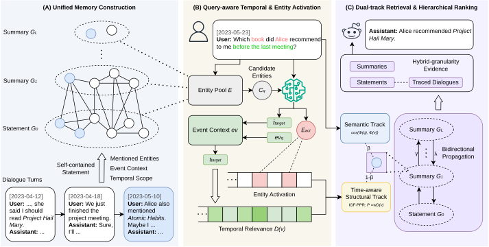

TSHMem: A Temporal-Semantic Hierarchical Memory Graph for Long-Term Conversational Agents
EMNLP 2026 · Main Conference
A hierarchical memory graph with temporal-semantic retrieval for conversational agents, achieving 66.3% accuracy on LongMemEval S* with fewer evidence tokens.